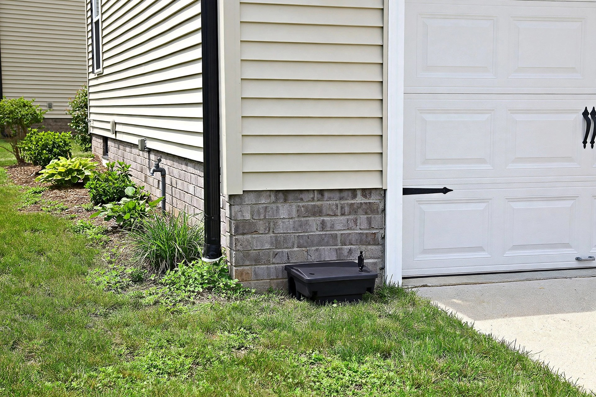

Of every room in the house, the kitchen is where a mouse problem announces itself - and where it matters most. We are a local Fort Worth team, TPCL-licensed and working across Tarrant County since 2010, and this is the practical version of what we tell homeowners about mice in the kitchen.
What We Do
- Rodent Inspection
- Rat Control
- Mouse Extermination
- Bait Station Installation
- Attic Sealing
- Garage Rodent Control
Areas We Serve
Fort Worth, Fairmount, Ryan Place, TCU Area, Ridglea, Wedgwood, Benbrook, Westover Hills, Arlington Heights and greater Tarrant County.
TPCL Licensed - Locally Owned Since 2010 - Same-Day Service - Written Quotes - Up to 5-Year Warranty on Premium Care.
Mouse Problems in Fort Worth Kitchens: A Practical Guide

It usually starts with the drawer. You open the utensil drawer or the cabinet under the sink and find the droppings - small, dark, rice-sized - along the back edge where nobody looks. Or it is the pantry: a corner chewed off a pasta box, a trail of something in the flour. A mouse in the kitchen is not a sign of a dirty home. It is a sign of a warm home with food, water and a gap somewhere in its shell, and in Fort Worth that describes nearly every house built before the last decade, including very clean ones.
Mice choose kitchens for reasons that make complete sense from their side. The plumbing under the sink gives them water. The stove and refrigerator give them warmth and a steady supply of crumbs in places no broom reaches. The cabinets give them dark, undisturbed runs from one end of the room to the other, connected by the pipe holes in the cabinet floors - holes that in most homes were cut generously and never sealed. A mouse can live its whole life in that under-cabinet world, emerging at night to feed within a few feet of where it sleeps.

The entry points are almost never where people expect. Homeowners look at doors; mice use the building's plumbing. The classic Fort Worth route is the dishwasher and sink supply lines, the gas line to the stove, and the refrigerator water line - each one passing through the floor or wall with a gap around it wide enough for a mouse, which needs only a quarter inch. Outside, those same penetrations are the ones to check first, along with the garage-to-kitchen door, whose sweep is usually the most worn in the house because it is the most used.
What works, in order: seal, then remove, then monitor. Sealing means every penetration in the kitchen and around its plumbing closed with mesh and metal that teeth cannot cut - copper mesh and escutcheon plates under the sink, the stove line sealed at the wall, the garage door sweep replaced. Removal means traps placed along the runs the mice actually travel, which are wall edges and the backs of cabinets, not the middle of the floor. Monitoring means a station or two where pressure can be measured, so the next mouse that tests the house is noticed as a data point instead of discovered as a drawer full of droppings.
What does not work is also worth naming, because the kitchen is where the myths live. Ultrasonic plugs do nothing measurable. Mothballs are a hazard, not a deterrent. A cat is a pet, not a pest program. And poison inside a kitchen is the wrong tool twice over - it risks the food environment, and a poisoned mouse that dies in a wall void trades a small problem for a smell that lasts for weeks. The homes that solve kitchen mice solve them mechanically: the holes closed, the runs trapped, the food in containers a mouse cannot chew.

One last, reassuring fact: a kitchen mouse problem is almost always smaller than it feels. The droppings look like an army; the reality is usually a handful of mice using a very good route. Close the route, and the kitchen goes back to being the room it should be - the one that feeds your family, and nothing else.
How do you know if the problem is current or history? Old droppings are grey, dry and crumble to dust; fresh ones are dark and soft. A simple test our technicians use: clean one monitored spot completely - under the sink, along the back of the stove - and check it in forty-eight hours. New droppings mean an active route, and their location points at the entry: a line appearing along one wall usually starts at the penetration nearest that wall. That small piece of detective work turns a vague worry into a map, and it costs nothing but a paper towel and two days of patience.
Children and pets shape the method, not just the worry. Everything recommended here - sealed penetrations, traps placed inside cabinets and along enclosed runs, monitored stations outside the food area - is chosen to work without leaving anything hazardous where a toddler opens cabinets or a dog noses along baseboards. That is the professional standard in a kitchen, and it is achievable in a home kitchen too, as long as the order is respected: close the holes first, and most kitchens never need anything stronger than a well-placed trap again.
And if the kitchen in question belongs to a home you have just bought in Fort Worth, add the under-sink and behind-stove checks to your first-week list, before the boxes are unpacked. Sellers rarely mention a mouse history, and the evidence - an old sealed penetration, a trap forgotten behind the water heater, droppings in the back of a cabinet - tells the story either way. Knowing on day three that the plumbing gaps need sealing is a small, satisfying fix. Learning it from a drawer in month four feels like a betrayal by a house you were just starting to like.
Related reading
Why mouse control services, and a straight breakdown of rodent control costs in Fort Worth